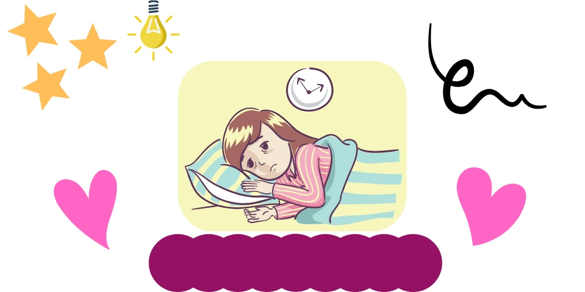
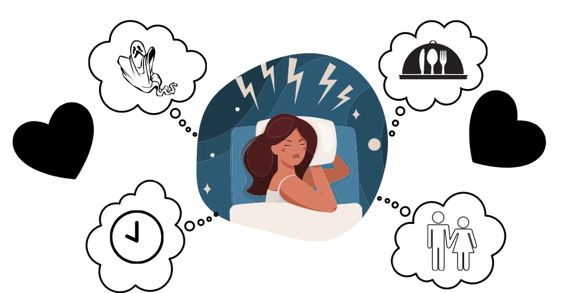

What is Idiopathic Hypersomnia?
Feeling sleepy is a normal feeling. On a given day, there’s only so much we can do. When physically, emotionally, or mentally drained, sleep is the ultimate solution. When we feel sleepy, it is our mind’s way of saying, “Hey, I’m tired. I want to lay and rest.” To address our exhaustion, we go to bed. On average, we need 8 hours of sleep to achieve complete rest. During sleep, the body gets to recuperate. However, not everyone gets to enjoy a good night’s sleep. Are you one of them? If yes, please continue as this article may help you. 8 hours of sleep is a luxury for those who have busy schedules. In spite of and even when sleep-deprived, most manage to get by. However, for those suffering from a sleep disorder known as Idiopathic Hypersomnia or Hypersomnolence, a full 8-hours of sleep will never be enough.
Those who suffer from this mental illness often feel sleepy, groggy, and tired. Even when well-rested, a person who suffers from Idiopathic hypersomnia desires to sleep even during the day. We are not talking about naps. We are talking about hours of daytime sleep. Imagine feeling sleepy all the time? So tired that it results in a perpetual state of sleepiness? This is what Idiopathic sleep disorder feels like.
Idiopathic Hypersomnia is a chronic mental health sleep disorder that needs professional attention. If left unaddressed, it may lead to constant irritability. It may also lead to a person’s inability to perform the normal duties we all have to perform on a daily basis.

What are the Symptoms of Idiopathic Hypersomnia
We all need to sleep. Some sleep longer than others. Some require fewer hours of sleep and rest, compared to others. However, some, regardless of how long they sleep, would still feel tired, groggy, and sleepy. Those who suffer from idiopathic sleep disorder feel sleepy all the time and we mean all the time.
Idiopathic Hypersomnia belongs to a class of sleep disorders known as Central Disorders of Hypersomnolence. The gist of it all is that Idiopathic Hypersomnia is a type of sleep disorder that causes daytime sleepiness. Likewise, Idiopathic Hypersomnolence creates an unstable internal body clock that is out of sync with the rest of society.
This literally means that all the person with this condition wants to do is oversleep at night and sleep some more during the day. There is no productivity when Idiopathic Hypersomnia is in the way.
Are you suffering from Idiopathic Hypersomnia? Here’s a checklist that may help you spot this sleeping disorder:
- Sleeping excessively, requiring more than 10 hours of sleep at night, and still find the need to take daytime naps. If a person sleeps more than 16 hours combined in a 24-hour day, this may be a sign of Idiopathic sleep disorder.
- For those with Idiopathic Hypersomnia, daytime sleep is a need. Regardless of what’s going on, sleep takes top priority for those suffering from it.
- Sleeping inertia or the feeling of drunkenness is present. Upon waking, there is an impaired physiological state, a sense of confusion, or poor coordination. This classifies as a sign of Idiopathic Hypersomnia.
- Cognitive Dysfunction. This relates to memory loss or problems, patterned behaviour or comprehension disability. In sum, a person with Idiopathic sleeping disorder experiences challenges with their thought processes.
What causes this Sleep Disorder?
The exact cause of Idiopathic Hypersomnia is unknown. That being said, in certain cases, the cause appears to be excessive production of a small molecule whose function is similar to that of a sleeping pill. It may also be related to brain changes due to injuries or infections.
Symptoms of Sleep Disorders
Health conditions, diseases, and disorders may cause sleep disorders and disturbances. Hence, when an Idiopathic sleep disorder is present, there may be a need to find professional help. Professional help may be needed when trying to find the cause of a person’s sleeping disorder. Underlying health problems may be present and only a mental health care professional can expel the proper assessment.
Do you suffer from sleeping disorders? Check the list below:
- Do you find falling asleep or staying asleep difficult?
- Is daytime fatigue always present?
- Do you get a non-negotiable urge to nap during the day, regardless if you have work or school commitments?
- Have you noticed having an unusual breathing pattern?
- Is there an unpleasant urge to move or fidget, causing disruption when falling asleep?
- If you do not get your daytime nap, do you become easily irritable or anxious?
- Is performance at work or in school impaired?
- Concentration at work, in school, or other commitments that you have to do, is missing?
- Do you feel depressed?
- Do you have to drink alcohol or take medication to force yourself to go to sleep?
Those above are just a few symptoms that we must take into consideration when a certain type of sleeping disorder is present. We must remember also that there are all sorts and types of sleeping disorders like sleep apnea, insomnia, parasomnias, restless leg syndrome, and narcolepsy. An idiopathic sleep disorder can be more challenging as the need for excessive sleep hinders a person from prioritising daily commitments because sleeping takes precedence above all.

Diagnosing Idiopathic Hypersomnia
As previously mentioned, to investigate whether a person suffers from Idiopathic Hypersomnia (or Hypersomnolence), there will be a need to reach out for professional help. A professional mental health care specialist can diagnose a person’s sleeping disorder and identify the underlying causes.
GPs may have to ask you to undergo a physical examination, ask for your medical history and medications taken. All this information will help your GP come up with an assessment, and then a referral for you to see a specialist. The specialist will then carry out a further assessment to determine whether a person has Idiopathic Hypersomnia. To give you an idea, here are some tests, tools used by specialists:
- Epworth Sleepiness Scale – This is a tool that doctors use. It rates a person’s sleepiness. It also identifies how the need to sleep excessively, or lack thereof, affects a person’s daily activities.
- Sleep Diary – Your physician may require a sleep diary, a log of daily sleep, to find a pattern. It may reveal the amount of sleep a person needs, require or want.
- Polysomnogram – An overnight stay in a sleep centre will be required for this test. This is because the person’s brain activity will be measured by a polysomnogram monitor to which they are connected. The test will also monitor a person’s leg movement, heart rate, breathing pattern, and measure oxygen levels during sleep.
- Multiple Sleep Latency Test – This tool is used to measure a person’s level of sleepiness. The test is carried out during the day and measures how quickly you fall asleep in a quiet environment.
Treatment: What Can Be Done?
There is no known cure or treatment for Idiopathic Hypersomnia. The aim or approach of treatment for Idiopathic Hypersomnolence is basically to ease and pacify symptoms. The approach of treatment for Idiopathic Hypersomnia may be medication if a medical disorder exists. 3 months of displaying symptoms of Idiopathic Hypersomnia must also exist before medication is even considered. A general health checkup is essential.
Treatment may also be based on the results after diagnosis. Proper management of symptoms plays a relevant key to win the battle against Idiopathic sleeping disorder. Some of these ideas may not cure Idiopathic Hypersomnia, but it may be worth a try.
- A consistent sleeping pattern may help. This means that a sleeping schedule must be followed. A person with Idiopathic Hypersomnia may want to consider going to bed and wake up in the morning at the same time. This will include weekends.
- For those who take amphetamine-based medications, giving up caffeine and alcoholic beverages would be wise.
- Therapy from someone, may they be a psychologist, a psychiatrist, a health care worker.
- Support groups may offer emotional and mental compassion because they too may be suffering from the same problem.
- Stop over-extending. For those who suffer from Idiopathic Hypersomnolence, pushing or extending one’s self will only trigger the mind and the body to revert. This means that a person will only continue to worsen his or her urge to sleep or oversleep because of over-exhaustion.
Help Yourself
If you or someone you know is suffering from Idiopathic Hypersomnolence, changing or creating a schedule to improve sleeping habits may help. Some may think it won’t, but it is worth a try. If you are having excessive sleeping, why not try the following and see if it works for you?
- Observe a schedule when going to bed at night, and in waking up in the morning.
- Avoid alcohol and caffeine. Alcohol and caffeine may affect one’s ability to feel the natural onset of sleep. These substances may disrupt a person’s sleep patterns, especially those suffering from Idiopathic Hypersomnia.
- A peaceful environment can help induce sleep.
- Avoid medication that may cause drowsiness.
- Working grave shifts throws off the body’s clock. It is not advisable, nor is it healthy to work nights continuously, especially when sleeping problems exist.
Idiopathic Hypersomnia or Idiopathic Hypersomnolence is a costly sleeping disorder. It is costly in the sense that it hinders and disrupts daily activities. When the urge to sleep is greater than fulfilling daily activities, then idiopathic sleep disorder must not be taken so lightly. If sleeping patterns are getting in the way of productivity, it may be time to see your GP.
Reach Out for Help
When your daytime sleeping, or lack of sleep for that matter, is getting in the way of your productivity, see your GP. This is especially true if daytime sleepiness is rampant. Likewise, if insomnia is getting in the way of a good night’s rest. Your GP may try to find the possible causes of your sleeping disorder. Your GP will try to identify possible underlying problems and explore all possibilities of cause.
When assessing a person who shows Idiopathic Hypersomnia symptoms, any medication that is taken will be taken into consideration. Thereafter, your GP may then refer your case to a specialist. A specialist can help diagnose what is causing your sleeping disorder.
In closing, let us not discredit the importance of sleep. Sleeping allows the body to recover from the day’s challenges. It is highly encouraged that we do get enough sleep to stay healthy. However, when sleep becomes our favourite pastime, a solution to problems that we do not want to deal with, and sleeping even when we have other commitments; is unhealthy.
If sleepiness, especially during the day is limiting your productivity, get help. If daytime sleep is hurting your life in general, then treatment may be needed. Treatment may depend on what’s causing the urge to sleep too much and for too long to the point that it is no longer healthy. Call your GP. It is the first step in getting you the help that you may need to end your battle with daytime sleepiness.
Check out the following video for some psychological tips to help you with Insomnia.